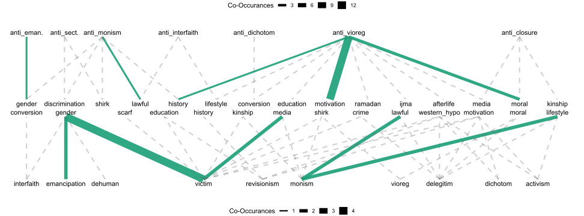
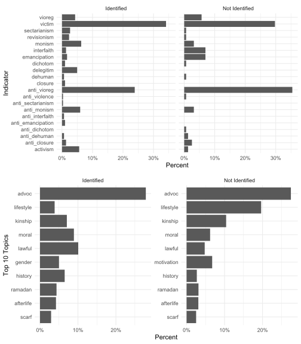
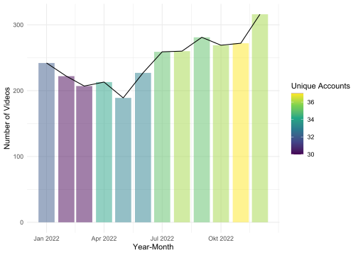
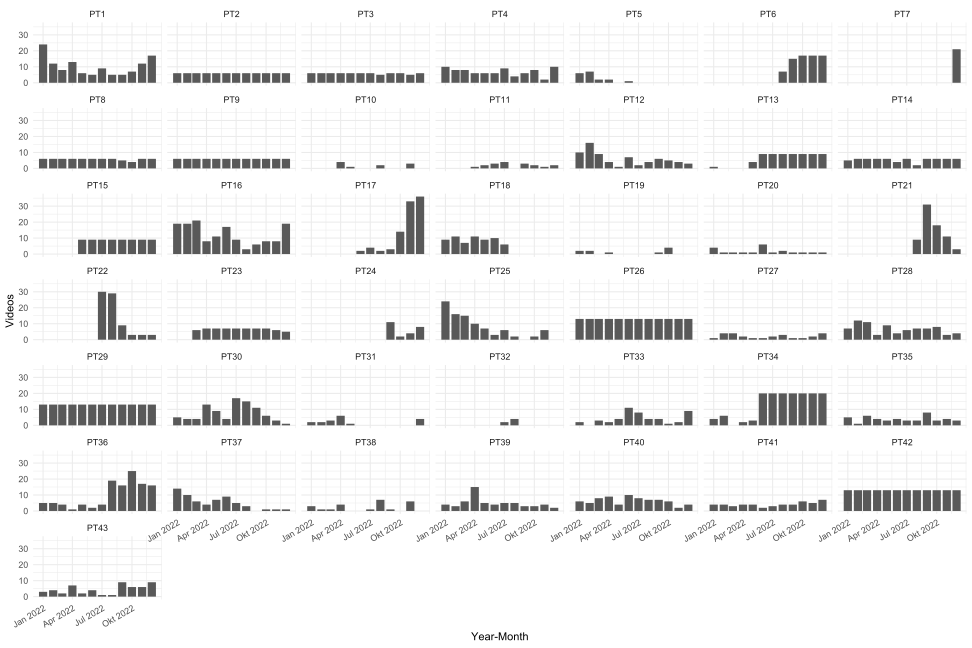

| Topic | Count | Content |
|---|---|---|
| advoc | 1144 | Religious Advocacy, Reminders, Teaching |
| lifestyle | 593 | Clothing, Food, Travel, Music, Dance |
| kinship | 385 | Partnership, Parent-Children relations |
| moral | 295 | Moral Constitution/Morality of Society/People |
| lawful | 272 | What is allowed/not allowed in Islam (haram/halal) |
| motivation | 206 | Empowering People to strive for better |
| history | 165 | Stories from History, History as a topic |
| ramadan | 147 | Ramadan and Fasting |
| afterlife | 144 | Death, Heaven, Hell |
| gender | 124 | Gender Relations |
| scarf | 110 | Hijab, Headscarf, Veiling |
| conversion | 73 | Convert Stories, Conversion to Islam |
| western_hypo | 68 | Hypocrisy of the West/Western countries towards Muslims compared to others |
| education | 65 | Education (Personal, School, etc.) |
| shirk | 60 | Monotheism and Polytheism |
| comedy | 53 | Funny and Humoristic Videos |
| media | 51 | Media Entities, Reports, Outlets as a Topic |
| crime | 41 | Crime, Criminality, Delinquency |
| discrimination | 41 | Discrimination, Racism, Islamophobia |
| middle_east | 38 | Israel-Palestine Conflict |
| business | 25 | Finance, How to make Money |
| rap | 18 | Rap Music and Personalities |
| ijma | 13 | Islamic Jurisprudence given from consensus |
| rolemodels | 13 | Islamic and Popcultural Rolemodels |
TikTok and (Anti)Radicalism: A Study on German Muslim Content Creators
Topic and Indicator Frequency
Religious Advocacy (kurz advoc) ist mit 1144 kodierten Videos das am häufigste Topic in der Studie. Primär sind zweierlei Gründe zu nennen: 1) Unser Fokus beim Sampeln auf Accounts mit dezidiert religiösen (islamischen) Inhalten, 2) Das Nutzen von Advoc als „allgemeine Kategorie“, die auch dann genutzt worden ist, wenn keine anderen Codes zum Thema Religion gepasst haben. Nichtsdestotrotz, es zeigt damit auch einfach, dass (selbstverständlich) die Vermittlung religiöser Inhalte bei eben solchen Accounts am obersten rangieren.
Grundsätzlich ist der Funktion solcher religiösen Accounts irgendwo auch eine, der „muslimischen Diaspora“ also die Rolle deutscher oder gar europäischer Muslime in Kontexten in denen Sie die Minderheit darstellen. Das Bedürfnis nach Orientierung und Antworten auf Lebensfragen, die sich überhaupt erst stellen im deutschen Kontext, erklärt überhaupt diese starke Präsenz von Accounts mit ebensolchen Inhalten. Diese Vermutung wird unterstrichen vom Fakt, dass einige Videos Themen in diesem Nexus aufgreifen oder zumindest Ausdruck gewisser Hybridität sind. Beispielsweise das Thema „lifesstyle“ (593). Wiederum zwei Dinge kommen hier zum Ausdruck: 1) Die Marktlogiken der TikTok-Attention-Economy die natürlich unter der ultima ratio den Algorhitmus zu befrieden, wirken auch auf religiös-muslimische Accounts. Ähnlich wie ihre Peers referieren sie gleich nach ihrem „Hauptthema“ auf lifestyle-matter, da dies der TikTok Kultur am ehesten entspricht, vielleicht auch die demografisch-geleiteten Interessen widerspiegeln. Ähnlich verhält es sich zu Theman wie „lawful“ (272), welches auch des Öfteren auftaucht und die Suche nach Antworten widerspiegelt, die oftmals in mehrheitlich Muslimischen Kontexten meist als selbstverständlich zu erachten sind. Was kann man machen/was nicht im Westen. Ähnlich mit Geschlechterverhältnissen („gender“, 124). Die Navigation islamischer Glaubenslehren und ihre Rolle, Umdeutungen vis-a-vis westlicher Moral- und Geschlechtervorstellungen. Die Theman zeigen quasi das diese Accounts eine Funktion erfüllen, die der des Sinnstiftens aber auch der moralisch-praxiologischen Orientierung im Zusammenspiel verschiedener Identitäten und der des Orientierungsbedürfnis nahe kommt.
Das Spannungsfeld „Muslime und der Westen“ wird explizit durch relativ häufige Nennungen von Theman Rund um das Kopftuch („scarf“, 110), Konvertierungen zum Islam („conversion“, 73), Herausarbeiten von westlicher Doppelmoral im Bezug zu muslimen („western_hypo“, 96), Diskriminierungserfahrungen („discrimination“, 41) und dem Nahohst-Konflikt („middle_east“, 38). Alle außer conversion tauche gehäuft mit dem Indikator „victim“ auf, was darauf hindeutet, dass es um die erlebte und wahrgenommene Viktimisierung als Muslim oder von Muslimen als soziale Entität ein zentrales Thema ist für Muslime und maßgeblich davon geprägt sind, dass die durch das Internet solidaritätsräume suchen oder ihre moralisch-politisches Präskription hierdurch legitimieren. Auch zeugt es von der Politisierung ihrer intersektionellen Identitäten, entlang Migration, Religion, Geschlecht usw.
Andere Themen sind zeugen unmittelbar von muslimischen in Deutschland, als ein kulturelles Phänomen, wie Comedy und Rap.
| Indicator | Total | Codes | Count | Content |
|---|---|---|---|---|
| victim | 150 | * | 150 | Victimization of the in-group, Muslims/Muslim nations. Not: Discrimination of other groups (see topic: discrimination) |
| anti_* | 0 | Recognition of Muslim agency, portrayal as aggressor | ||
| vioreg | 150 | * | 22 | Authoritarian theology of a vengeful, stern God/religion and no error tolerance |
| anti_* | 128 | Belief in a merciful, understanding God with tolerance for human imperfection | ||
| monism | 47 | * | 24 | Belief in a single, exclusively true interpretation and practice of Islam, while rejecting differing opinions and ambiguities |
| anti_* | 23 | Embracing religious pluralism, tolerance of ambiguity, gray scales, and acceptance of diverse interpretations and practices within Islam | ||
| activism | 19 | * | 19 | Legal political activism (Protest, Boycott, Art) |
| anti_* | 0 | Against activism: | ||
| emancipation | 19 | * | 16 | Emancipation of people/groups (typically women and children), rights to education, etc. |
| anti_* | 3 | Dependence of people/groups, with limited or no access to rights and education | ||
| interfaith | 17 | * | 15 | Embracing interfaith cohesion/exchange/collaboration/respect |
| anti_* | 2 | Rejection of interfaith cohesion/exchange/collaboration/respect | ||
| delegitim | 15 | * | 15 | Belief in the illegitimacy/obsolescence of (German) democracy, political institutions, and the fundamental socio-political system |
| anti_* | 0 | Belief in their legitimacy | ||
| closure | 11 | * | 3 | Discrimination and exclusion of people from certain spaces and social life |
| anti_* | 8 | Against closure, granting access to spaces, favoring friendships/ties | ||
| sectarianism | 10 | * | 9 | Denigration of other religious currents and exclusion of denominations from Islam that self-identify as such/Takfirism |
| anti_* | 1 | Promotion of religious inclusivity and acceptance of diverse Islamic denominations | ||
| revisionism | 8 | * | 8 | Reestablishment of the Islamic Caliphate or other past dynasties. Unification of Muslim peoples under one rule/Caliphate |
| anti_* | 0 | Opposition to restoring past Islamic dynasties, advocating for separate, independent governance among Muslim communities | ||
| dehuman | 7 | * | 3 | Denying humanity of others, harsh insults |
| anti_* | 4 | Against dehumanization, defending people against it | ||
| dichotom | 5 | * | 4 | Dividing the world, society, and groups into friend and foe |
| anti_* | 1 | Seeing the world, society, and groups beyond friend and foe distinctions | ||
| violence | 2 | * | 0 | Use of physical violence to achieve political/religious goals. Jihadist rhetoric |
| anti_* | 2 | Pursuit of political/religious goals through non-violent means, emphasizing peaceful discourse |
Hier spiegeln sich (ähnlich zu Ramis Argumenten) dreirlei Patterns auf: Rolle von religiösen Auslegung,Pluralismus/Monismuis, Gewalt Affinität als politisches Mittel und Anti-Demokratischen/Anti-Establishment Narrativen. Dominanteste (Unter-)Kategorie ist „victim“ (150). Diese Kategorie ist eine neutrale, insofern, es selbst kein (meist) kein Radikalisierungsindikator ist aber ein Einfallstor oder potentes Narrativ. Es unterschreicht die Relevanz muslim/islam bezogener Anfeindungen, Misstände, Diskriminerungen, die in- oder auslands erlebt oder mitgefühlt werden (gegen über der „ingroup“). Interessanterweise steht direkt dahinter, als quasi theologische Kategorie „vioreg“ als eine Auslegungsform des Islams als Religion und nicht als soziale Einheit. Die allermeisten Videos sind hierbei genau andersherum gepolt gwesen („anti_vioreg“, 128), was zeigt, das bei den aller meisten Videos, eine Auslegung vom Islam stattfindet, die meist rücksichtsvoll und bahmherzig ist. Bei den meisten sicher Ernst gemeint, bei einigen übernimmt es sicherlich die Funktion der „humaniizing“ des Akteurs und seiner Message. In Richtung politisch orietneriten Extremismus (gewalt, deligimation etc.) scheitn es so, dass legaler POltiischer Aktivismus weit aus öfter vertreten ist als Gewalt oriernite, jedoch finden sich gehäuft Deligitimationen des hiesigen rechtsstaates statt (meist in Verbindung mit Victim usw.)
Co-Occurances: Victim

| Radicalism | n | Topic | n |
|---|---|---|---|
| activism | 9 | western_hypo | 52 |
| delegitim | 6 | media | 30 |
| interfaith | 5 | scarf | 30 |
| dichotom | 2 | middle_east | 23 |
| emancipation | 2 | crime | 20 |
| revisionism | 2 | discrimination | 20 |
| anti_dehuman | 1 | advoc | 15 |
| dehuman | 1 | history | 14 |
| monism | 1 | gender | 12 |
| moral | 8 | ||
| motivation | 8 | ||
| kinship | 5 | ||
| conversion | 4 | ||
| education | 4 | ||
| ramadan | 3 | ||
| lifestyle | 2 | ||
| shirk | 2 | ||
| lawful | 1 | ||
| rap | 1 |
- Aufjedenfall Paper nochmal lesen und dort die Argumente und Zusammenhänge anschauen und Beispiele überlegen
- Folgende Zusammenhänge Interessant (Quali Beispiele):
- Victim und die Handlungslösungen diesbezüglich im Kontrast zwischen activism und radikalen Hanldungen/Lösungen (Tabelle)
- Victim und die Projektion auf betimmte Themen, auf welcher Grundlage wird Victimhood verspürt und ihr Zusammenhang zum Leben als (muslimische) Minderheit in Deutschland (Tabelle)
- Folgende Zusammenhänge zwischen Themen und Indikatoren innerhalb von Victim interressant für Beispiele (Graph):
- western_hypo + (deligitim, interfaith) = westen hypocracy als gurndlage für deligitmierung aber auch als apell für mer interfaith dialog
- scarf + (emancipation, activism) = hijab als gegestand emanzipatorischer diskurse und fundament für (legalen) politischen aktivismus
- interfaith - discrimination = discrimination als grundlage der nivilierung zwischen muslimen und nicht muslimien
- deligitim + advoc = religiös begründetet deligiimation des staates z.b.
Co-Occurances: Advoc

| Radicalism | n | Topic | n |
|---|---|---|---|
| anti_vioreg | 64 | lifestyle | 103 |
| victim | 15 | motivation | 91 |
| anti_monism | 9 | kinship | 63 |
| monism | 9 | moral | 43 |
| delegitim | 5 | afterlife | 41 |
| interfaith | 5 | gender | 30 |
| vioreg | 5 | education | 28 |
| sectarianism | 4 | history | 24 |
| activism | 3 | lawful | 24 |
| emancipation | 3 | shirk | 19 |
| revisionism | 3 | ramadan | 17 |
| anti_closure | 2 | media | 11 |
| dehuman | 2 | conversion | 10 |
| anti_emancipation | 2 | business | 9 |
| closure | 1 | scarf | 7 |
| anti_dichotom | 1 | comedy | 6 |
| dichotom | 1 | rap | 4 |
| anti_interfaith | 1 | rolemodels | 4 |
| anti_sectarianism | 1 | western_hypo | 4 |
| crime | 3 | ||
| discrimination | 2 | ||
| ijma | 2 | ||
| middle_east | 1 |
- Aufjedenfall Paper nochmal lesen und dort die Argumente und Zusammenhänge anschauen und Beispiele überlegen
- Folgende Zusammenhänge Interessant (Tabelle; Quali Beispiele):
- Der hohe Anteil von Lifestyle, privatleben related topics mit Advocacy (lifestyle, motivation, kinship, gender) noch VOR sehr theologischen Themen wie shirk, afterlife ==> die soziale Funktion von Dawah Accoutns im Westen/Deutschland
- natürlich viel höre co-inzidenz von rad. indikatoren die auf theologischen Aspekten beruhen: anti_vioreg, aber auch victim zwei stärkstes thema == also wir haben sone dimension einmal politics auf der einen seite und dann auf anderen seite religious advocacy als theologisches ding aber brücken indikator ist viktim als prägender faktore welches das leben von muslimen in deutschland bezeichnet, so sehr dass die soziale wie religiöse diskure des islams darauf münzt
- Folgende Zusammenhänge zwischen Themen und Indikatoren innerhalb von Advoc interressant für Beispiele (Graph):
- Monism und anti_monism natürlich stärkeren bezug zu lawful (etwas haram oder hala nicht- da hast du dimension von leuten die eher ambiguitäten erlauben und manche simplifizieren)
- Victim + Geschlecht (unter advoc): yani Frauen als mehrfach diskriminiert, hybervisible als Muslimisch (scarf) und daher diese überlappung von Religiöser Ansprache, Victim und Gender zu gleich (auch zu gleich diese viktimisierung von Frauen vielleicht vom Westen aus)
- anti_vioreg + motivation: dieses nicht verzagen gott ist bahmherzig ist hier ganz wichtig als narrativ. weil es zu einem seelsorge, dawah, motivation kombiniert und zu gleich die Realitäten anspricht von vielleicht Jugendlichen die nicht wissen ob Sie als Muslime richtig praktizieren oder vielen versuchungen ausgesetzt werden, und ihre identität finden. aber ich finde das ganz interessant als dominantes narrativ: hoffnung usw. zieht sich bisschen durch alle lifestyle topics
Gender and Activity
| Topic | Female | Male | Avg.Likes | Avg.Views | Avg.Duration |
|---|---|---|---|---|---|
| comedy | 5% | 0.4% | 17150 | 552373 | 20 |
| lifestyle | 39.6% | 8.8% | 26303 | 385333 | 37 |
| kinship | 12.6% | 8.3% | 17466 | 216151 | 62 |
| conversion | 2.3% | 1.7% | 18351 | 175363 | 79 |
| lawful | 1.1% | 7.9% | 11072 | 146012 | 69 |
| western_hypo | 0.4% | 2% | 9673 | 127561 | 86 |
| education | 2.2% | 1.6% | 14082 | 111535 | 56 |
| crime | 0.4% | 1.2% | 8036 | 100116 | 74 |
| shirk | 0.9% | 1.6% | 9138 | 99500 | 130 |
| advoc | 8.1% | 30.1% | 12175 | 94389 | 52 |
| gender | 2% | 3.4% | 6786 | 91989 | 70 |
| afterlife | 0.7% | 4.1% | 9734 | 83113 | 69 |
| rolemodels | 0% | 0.4% | 8279 | 82867 | 78 |
| media | 0.5% | 1.4% | 7568 | 80675 | 72 |
| motivation | 3.4% | 5.3% | 10157 | 75648 | 55 |
| moral | 5% | 7.9% | 7758 | 73022 | 88 |
| ramadan | 2% | 4% | 7202 | 69800 | 63 |
| scarf | 9% | 1.8% | 5587 | 62271 | 61 |
| middle_east | 0% | 1.1% | 6003 | 56628 | 108 |
| rap | 0.5% | 0.5% | 3253 | 39615 | 46 |
| discrimination | 0.9% | 1.1% | 2727 | 38586 | 155 |
| history | 0.9% | 4.8% | 3298 | 33854 | 152 |
| ijma | 0% | 0.4% | 876 | 27654 | 92 |
| business | 2.3% | 0.4% | 1979 | 21970 | 88 |
See Paper
Status and Topical Diversity

Retrieved Accounts, Pseudonoyms, and Activity
| Account | Pseudonym | Status* | Available | Gender | Videos | Start | End |
|---|---|---|---|---|---|---|---|
| abumikail1 | PT1 | Identified | TRUE | male | 123 | 01.01.2022 | 28.12.2022 |
| amal_tvv | PT2 | Not Identified | TRUE | female | 72 | 02.01.2022 | 23.12.2022 |
| bjoernslife | PT3 | Not Identified | TRUE | male | 70 | 02.01.2022 | 29.12.2022 |
| circassian.eagle | PT4 | Not Identified | TRUE | male | 83 | 02.01.2022 | 27.12.2022 |
| dawahgang | PT5 | Not Identified | TRUE | male | 18 | 01.01.2022 | 07.06.2022 |
| deen_akademie | PT6 | Identified | TRUE | male | 73 | 17.08.2022 | 30.12.2022 |
| deen_ul_islam1 | PT7 | Not Identified | TRUE | female | 21 | 22.12.2022 | 31.12.2022 |
| enes.vaseelah | PT8 | Not Identified | TRUE | male | 69 | 02.01.2022 | 31.12.2022 |
| ezwr1 | PT9 | Identified | TRUE | male | 72 | 17.01.2022 | 28.12.2022 |
| fiete_boi | PT10 | Not Identified | TRUE | male | 10 | 03.04.2022 | 04.11.2022 |
| generation_islam | PT11 | Identified | FALSE | male | 18 | 29.04.2022 | 12.12.2022 |
| generation_islamgi | PT12 | Identified | TRUE | male | 71 | 25.01.2022 | 26.12.2022 |
| gglaros | PT13 | Not Identified | TRUE | male | 68 | 12.01.2022 | 25.12.2022 |
| gil.lua99 | PT14 | Not Identified | FALSE | male | 65 | 01.01.2022 | 26.12.2022 |
| hamzaadrianhamza | PT15 | Not Identified | TRUE | couple | 72 | 07.05.2022 | 27.12.2022 |
| hidayaelisa | PT16 | Not Identified | TRUE | female | 148 | 01.01.2022 | 31.12.2022 |
| iman.vogue | PT17 | Not Identified | TRUE | female | 105 | 10.06.2022 | 30.12.2022 |
| imauftragdesislam | PT18 | Identified | TRUE | male | 63 | 01.01.2022 | 13.07.2022 |
| imjuliajordan | PT19 | Not Identified | FALSE | female | 10 | 22.01.2022 | 13.10.2022 |
| islam_moe | PT20 | Not Identified | TRUE | male | 21 | 02.01.2022 | 28.12.2022 |
| islamcontent5778ii | PT21 | Identified | TRUE | male | 72 | 27.08.2022 | 07.12.2022 |
| islamcontent778 | PT22 | Not Identified | TRUE | male | 80 | 05.07.2022 | 24.12.2022 |
| islamic.wort | PT23 | Not Identified | TRUE | male | 66 | 01.03.2022 | 27.12.2022 |
| islammzitate | PT24 | Not Identified | FALSE | unknown | 25 | 08.09.2022 | 18.12.2022 |
| islamwunder | PT25 | Not Identified | TRUE | male | 91 | 03.01.2022 | 19.11.2022 |
| isso_bayan | PT26 | Not Identified | TRUE | male | 156 | 04.01.2022 | 31.12.2022 |
| logical114 | PT27 | Not Identified | TRUE | male | 26 | 30.01.2022 | 27.12.2022 |
| loransyusuf | PT28 | Identified | TRUE | male | 81 | 22.01.2022 | 26.12.2022 |
| loveallah.de | PT29 | Identified | TRUE | male | 156 | 01.01.2022 | 29.12.2022 |
| machtsklick_support | PT30 | Identified | TRUE | male | 93 | 10.01.2022 | 19.12.2022 |
| mazooffiziell1 | PT31 | Not Identified | FALSE | male | 18 | 02.01.2022 | 26.12.2022 |
| mert.islam.27 | PT32 | Not Identified | TRUE | male | 14 | 28.07.2022 | 13.08.2022 |
| mira_eliane | PT33 | Not Identified | TRUE | female | 50 | 06.01.2022 | 28.12.2022 |
| moe786hh | PT34 | Identified | TRUE | male | 155 | 10.01.2022 | 27.12.2022 |
| mucahit_akif_uzun | PT35 | Not Identified | TRUE | male | 47 | 06.01.2022 | 21.12.2022 |
| musliminteraktiv | PT36 | Not Identified | FALSE | male | 118 | 05.01.2022 | 30.12.2022 |
| nalhi.23 | PT37 | Not Identified | TRUE | male | 64 | 01.01.2022 | 23.12.2022 |
| redlionx | PT38 | Identified | TRUE | male | 24 | 06.01.2022 | 22.11.2022 |
| safi_muslimcouple | PT39 | Not Identified | TRUE | couple | 59 | 01.01.2022 | 09.12.2022 |
| sakinaannur | PT40 | Not Identified | TRUE | unknown | 76 | 01.01.2022 | 26.12.2022 |
| sarikliyunus | PT41 | Not Identified | FALSE | male | 50 | 04.01.2022 | 30.12.2022 |
| teamsad.1 | PT42 | Not Identified | FALSE | male | 156 | 02.01.2022 | 30.12.2022 |
| youngmuslimofficial | PT43 | Identified | TRUE | male | 54 | 11.01.2022 | 30.12.2022 |

